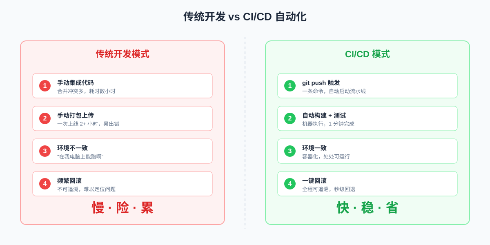
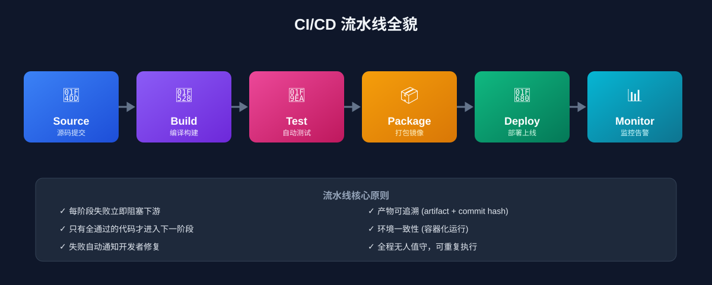
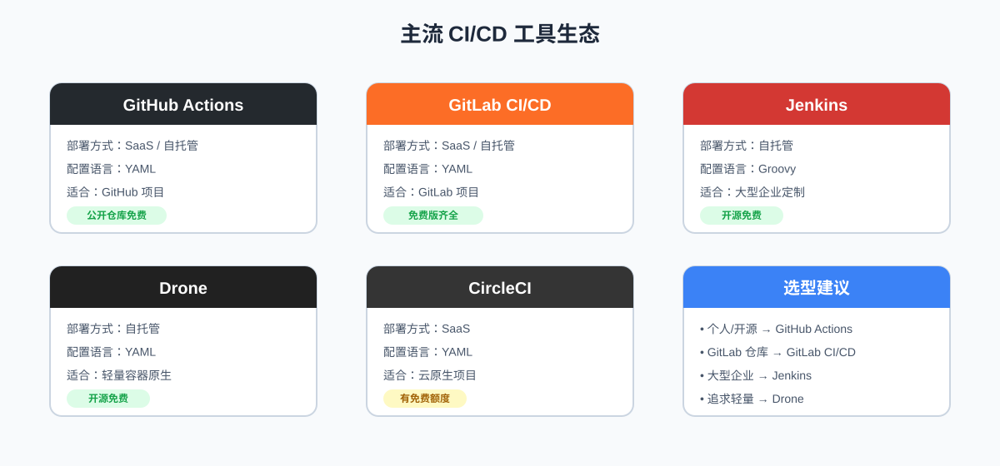
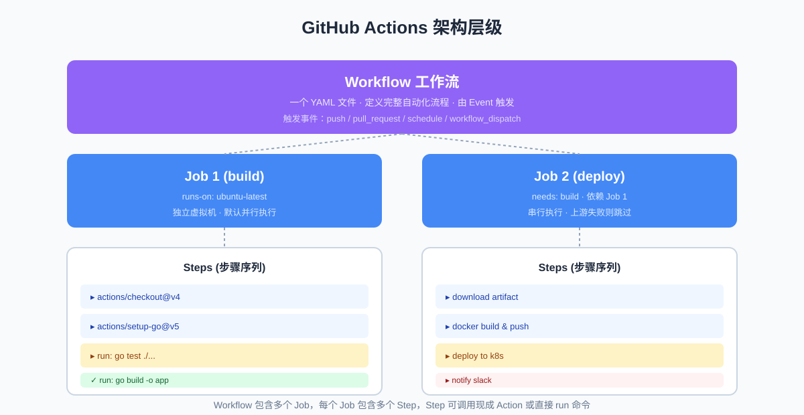
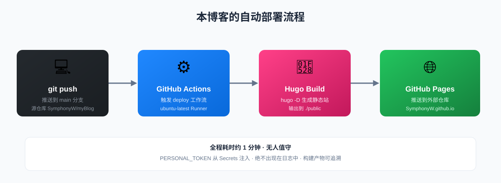
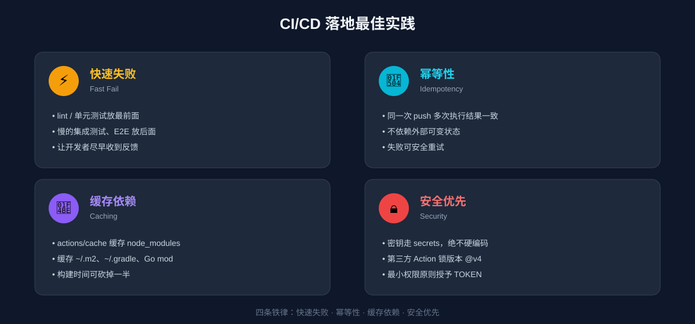
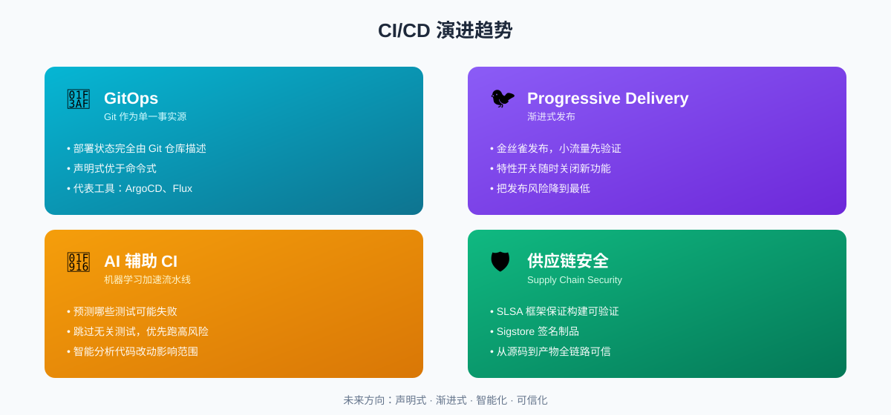

CI/CD 完整指南：从原理到实战
一次搞懂持续集成、持续交付、持续部署到底是什么，再带你用 GitHub Actions 从 0 搭建一条真正能跑的自动化流水线。
一、先搞懂：为什么我们需要 CI/CD？
在聊概念之前，先还原一个真实的场景：
团队有 5 个开发者，每个人本地开发完功能后，各自打包、上传服务器、重启服务。某天上线后系统挂了，排查了 4 个小时才发现：小张覆盖了小李刚提交的配置，老王的代码依赖了一个只有他本机才装的库。
这种场景每天都在无数团队上演，核心痛点就三个：
- 集成地狱：代码合到一起就冲突，越拖越难合并
- 手动发布又慢又脆：一次上线要 2 小时，还经常回滚
- 环境不一致：“在我电脑上能跑啊” 成了最经典的借口
CI/CD 就是来解决这些问题的。它把 代码集成 → 测试 → 构建 → 部署 这一整套流程自动化，让机器替人完成重复、易错的工作。

传统开发与 CI/CD 对比如图所示，传统模式下团队把大量时间花在手动集成和发布上；而 CI/CD 模式下，开发者只需要 git push，剩下的交给流水线，几分钟就能拿到一个可部署的版本。
二、核心概念：CI、CD、CD 到底指什么？
这三个缩写经常被混在一起说，其实它们是流水线的三个阶段：
| 缩写 | 全称 | 中文 | 核心动作 | 触发时机 |
|---|---|---|---|---|
| CI | Continuous Integration | 持续集成 | 合并代码 + 自动构建 + 自动测试 | 每次 push / PR |
| CD | Continuous Delivery | 持续交付 | CI 通过后，自动打包成可发布产物 | CI 成功后 |
| CD | Continuous Deployment | 持续部署 | 自动把产物部署到生产环境 | 交付产物就绪后 |
简单记忆：持续交付是"随时能发，但要不要发由人决定"；持续部署是"机器直接发，不需要人按按钮"。
一条完整的 CI/CD 流水线长什么样？

CI/CD 流水线全貌一条典型的流水线会经历这几个阶段：
- Source（源码）：开发者 push 代码到仓库
- Build（构建）：编译代码、安装依赖、生成可执行文件或镜像
- Test（测试）：跑单元测试、集成测试、代码质量扫描
- Package（打包）：把产物打成 Docker 镜像 / jar / 二进制
- Deploy（部署）：推到测试环境 → 预发环境 → 生产环境
- Monitor（监控）：上线后持续观察指标，异常自动回滚
每个阶段失败都会阻塞流水线，并通知开发者修复，确保 只有通过全部检查的代码才能进入下一阶段。
三、主流工具横向对比
市面上的 CI/CD 工具非常多，选型时主要看：托管方式、生态、集成成本。下面是最常用的几款：
| 工具 | 部署方式 | 配置语言 | 适合场景 | 是否免费 |
|---|---|---|---|---|
| GitHub Actions | SaaS / 自托管 | YAML | 仓库在 GitHub 的项目 | 公开仓库免费 |
| GitLab CI/CD | SaaS / 自托管 | YAML | 仓库在 GitLab 的项目 | 免费版功能齐全 |
| Jenkins | 自托管 | Groovy | 大型企业、复杂定制场景 | 开源免费 |
| Drone | 自托管 | YAML | 追求轻量、容器原生 | 开源免费 |
| CircleCI | SaaS | YAML | 云原生项目 | 有免费额度 |

CI/CD 工具生态新手怎么选？
- 个人项目 / 开源项目 → GitHub Actions，配置简单，和代码仓库零距离
- 公司用 GitLab → GitLab CI/CD，开箱即用
- 大型企业、需要深度定制 → Jenkins，插件生态最丰富，但维护成本高
本文后续实战用 GitHub Actions 演示，因为它最容易上手，而且本博客本身就是用 GitHub Actions 自动部署的。
四、GitHub Actions 核心概念
在写流水线之前，先理解 5 个核心术语：
| 概念 | 说明 | 类比 |
|---|---|---|
| Workflow（工作流） | 一个 YAML 文件，定义完整的自动化流程 | 一份"作业指导书" |
| Event（事件） | 触发工作流的动作，如 push、PR、定时 | “启动按钮” |
| Job（任务） | 工作流里的一组步骤，默认多个 Job 并行执行 | “一道工序” |
| Step（步骤） | Job 里的具体操作，可以是命令或 Action | “工序里的一步” |
| Action | 可复用的步骤单元，类似函数 | “一个工具函数” |

GitHub Actions 架构一个 Workflow 可以包含多个 Job，每个 Job 跑在独立的虚拟机里，Job 之间可以通过 needs 定义依赖关系，形成串行或并行的执行图。
五、实战：用 GitHub Actions 自动部署 Hugo 博客
理论讲完，下面用一个真实案例演示。本博客就是用下面的流水线自动构建并部署到 GitHub Pages 的。
5.1 流水线全貌
|
|
5.2 逐行解析
触发条件：
|
|
表示：只要有人把代码 push 到 main 分支，就触发这条流水线。也可以配置 pull_request、schedule（定时）、workflow_dispatch（手动触发）等。
运行环境：
|
|
runs-on 指定 Job 跑在哪台机器上，ubuntu-latest 是 GitHub 提供的免费 Linux 虚拟机，预装了常见工具。也可以选 windows-latest、macos-latest。
步骤一：拉取代码
|
|
uses 表示引用一个现成的 Action，actions/checkout@v4 是官方提供的拉代码 Action。fetch-depth: 0 表示拉取完整 git 历史，Hugo 构建需要它来生成文章时间线。
步骤二：安装 Hugo
|
|
extended: true 安装的是 Hugo 扩展版，支持 SCSS 编译。版本号建议固定，避免上游升级导致构建失败。
步骤三：构建站点
|
|
run 直接执行 shell 命令。-D 表示包含 draft 草稿文章（生产环境建议去掉）。
步骤四：部署到 GitHub Pages
|
|
把 ./public 目录的构建产物推送到外部仓库 SymphonyW/SymphonyW.github.io 的 main 分支。PERSONAL_TOKEN 是从仓库 Secrets 里读取的，绝对不会出现在日志里，这是 CI/CD 管理密钥的标准做法。

本博客的部署流程整条流水线跑完大约 1 分钟，从你 git push 到博客上线，全程无人值守。
六、进阶：加上测试和质量检查
光构建不测试，CI 就名存实亡。下面是一个带测试的进阶示例：
|
|
几个值得注意的点：
strategy.matrix：矩阵测试，一次性在 Go 1.21 和 1.22 两个版本上跑测试，确保兼容性go test -race：开启竞态检测，能发现并发 bugif: success()：只有前面步骤成功才上传覆盖率，避免上传垃圾数据- Lint 单独一步：代码风格检查和功能测试解耦，定位问题更快
七、CI/CD 落地最佳实践
理论 + 实战都讲完了，最后总结几条经过踩坑总结的最佳实践：
7.1 流水线设计原则

CI/CD 最佳实践- 快速失败：把最快的检查（lint、单元测试）放前面，慢的（集成测试、E2E）放后面，让开发者尽早收到反馈
- 幂等性：同一次 push 触发多次流水线，结果必须一致，不能依赖外部可变状态
- 失败必须可复现：日志要清晰，错误信息要能直接定位到代码行
- 缓存依赖：
actions/cache缓存node_modules、~/.m2等，能把构建时间砍掉一半
7.2 安全要点
- 密钥只放 Secrets：
PASSWORD、TOKEN一律通过${{ secrets.XXX }}注入，绝不能硬编码 - 最小权限原则：
GITHUB_TOKEN的权限按需授予，默认只读 - 第三方 Action 锁版本：用
@v4而不是@main，避免上游被篡改导致供应链攻击 - 敏感仓库用自托管 Runner：私有代码不要跑在公共 Runner 上
7.3 常见反模式
| 反模式 | 问题 | 正确做法 |
|---|---|---|
| 流水线里跑 30 分钟 | 开发者不愿意等，直接跳过 | 拆分并行 Job，加缓存 |
| 只有 main 分支跑 CI | feature 分支 bug 流到 main | 所有 PR 都必须跑 CI |
| 测试覆盖率 < 30% 还强跑 | CI 形同虚设 | 先补关键路径测试，再逐步提高门槛 |
| 手动 ssh 部署 | 不可追溯、不可回滚 | 一切部署走流水线 |
八、CI/CD 的演进方向
CI/CD 不是终点，它还在持续演进，几个值得关注的趋势：
- GitOps：以 Git 作为单一事实源，部署状态完全由 Git 仓库描述，ArgoCD、Flux 是代表工具
- Progressive Delivery：渐进式发布，结合金丝雀发布、特性开关，把风险降到最低
- AI 辅助 CI：用机器学习预测哪些测试可能失败、哪些代码改动有风险，跳过无关测试加速流水线
- 供应链安全：SLSA、Sigstore 等框架兴起，确保从源码到产物的每一步都可验证

CI/CD 演进趋势总结
CI/CD 不是某个工具，而是一种 “让重复的事情自动化、让自动化的结果可信任” 的工程理念。它的价值不在于省了多少人力，而在于让每一次发布都变得 可预期、可追溯、可回滚。
回顾本文要点：
- CI 解决集成问题，CD 解决交付和部署问题，三者是一条递进的流水线
- 选工具先看仓库托管在哪，GitHub 项目首选 GitHub Actions
- 流水线的核心是 触发 → 构建 → 测试 → 部署，每一步失败都要能阻塞下游
- 密钥走 Secrets、Action 锁版本、缓存依赖、快速失败，是落地的四条铁律
从今天开始，给你的项目加一条最简单的 CI 流水线吧 —— 哪怕只是 push 后自动跑一遍测试，也是迈向工程化的第一步。